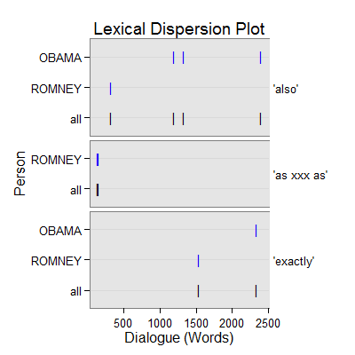

dc_comparison(text.var, grouping.var, n.before = 1, tot = FALSE, n.after = n.before, ord.inds = TRUE, markup = c("<<", ">>"), name = "comparison", ...)
TRUE condenses sub-units (e.g., sentences)
into turns of talk for that grouping.var.TRUE inds is ordered least to greatest.c("", "") to not mark the comparison discourse
markers.termco.Returns returns a list of 2:
countsA termco object of comparison discourse marker counts.
comparisonA trans_context object of comparison discourse connectors in context.
Extract comparison discourse connectors in context.
Kalajahi, S. A. R., Abdullah, A. N., Mukundan, J., & Tannacito, D. J. (2012) Discourse connectors: An overview of the history, definition and classification of the term. World Applied Sciences Journal, 19(11), 1659-1673.
out <- with(pres_debates2012[1:200, ], dc_comparison(dialogue, person)) out[1]$counts person word.count comparison 1 OBAMA 943 4(.42%) 2 ROMNEY 1349 4(.30%) 3 LEHRER 316 0out[2]$comparison =================================== Event 1: [lines 12-14] ROMNEY: They'll have at least two plans. ** ROMNEY: And by the way, if the government can be <<as efficient as>> the private sector and offer premiums that are <<as low as>> the private sector, people will be happy to get traditional Medicare or they'll be able to get a private plan. ROMNEY: I know my own view is I'd rather have a private plan. =================================== Event 2: [lines 22-24] ROMNEY: That's the plan that I've put forward. ** ROMNEY: And, by the way the idea came not even from Paul Ryan or or Senator Wyden, who's the co author of the bill with with Paul Ryan in the Senate, but <<also>> it came from Bill Bill Clinton's chief of staff. ROMNEY: This is an idea that's been around a long time, which is saying, hey, let's see if we can't get competition into the Medicare world so that people can get the choice of different plans at lower cost, better quality. =================================== Event 3: [lines 109-111] OBAMA: You had credit agencies that were stamping these as Aone great investments when they weren't. ** OBAMA: But you <<also>> had banks making money hand over fist, churning out products that the bankers themselves didn't even understand, in order to make big profits, but knowing that it made the entire system vulnerable. OBAMA: So what did we do? =================================== Event 4: [lines 115-117] OBAMA: We've going to make sure that you've got to have a living will so so we can know how you're going to wind things down if you make a bad bet so we don't have other taxpayer bailouts. ** OBAMA: In the meantime, by the way, we <<also>> made sure that all the help that we provided those banks was paid back every single dime, with interest. OBAMA: Now, Governor Romney has said he wants to repeal Dodd Frank. =================================== Event 5: [lines 132-134] ROMNEY: You say we were giving mortgages to people who weren't qualified. ** ROMNEY: That's <<exactly>> right. ROMNEY: It's one of the reasons for the great financial calamity we had. =================================== Event 6: [lines 170-172] ROMNEY: Fourth, there was a survey done of small businesses across the country, said, what's been the effect of Obamacare on your hiring plans? ** ROMNEY: And three quarters of them said it makes us <<less like>>ly to hire people. ROMNEY: I just don't know how the president could have come into office, facing twenty three million people out of work, rising unemployment, an economic crisis at the at the kitchen table, and spend his energy and passion for two years fighting for Obamacare instead of fighting for jobs for the American people. =================================== Event 7: [lines 183-185] OBAMA: So we did work on this, alongside working on jobs, because this is part of making sure that middle class families are secure in this country. ** OBAMA: And let me tell you <<exactly>> what Obamacare did. OBAMA: Number one, if you've got health insurance, it doesn't mean a government takeover. =================================== Event 8: [lines 190-192] OBAMA: They have to let you keep your kid on their insurance your insurance plan until you're twenty six years old. ** OBAMA: And it <<also>> says that you're going to have to get rebates if insurance companies are spending more on administrative costs and profits than they are on actual care. OBAMA: Number two, if you don't have health insurance, we're essentially setting up a group plan that allows you to benefit from group rates that are typically eighteen percent lower than if you're out there trying to get insurance on the individual market.plot(out)
## Save externally use .doc or .txt ## print(out[[2]], file="comparison.doc")